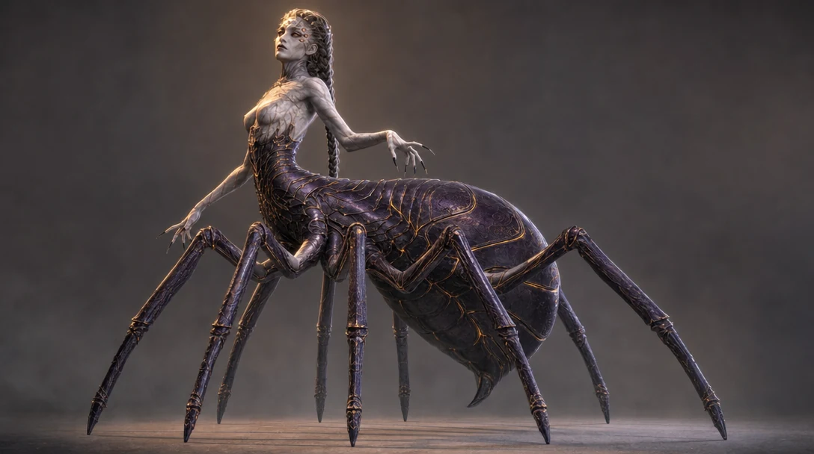
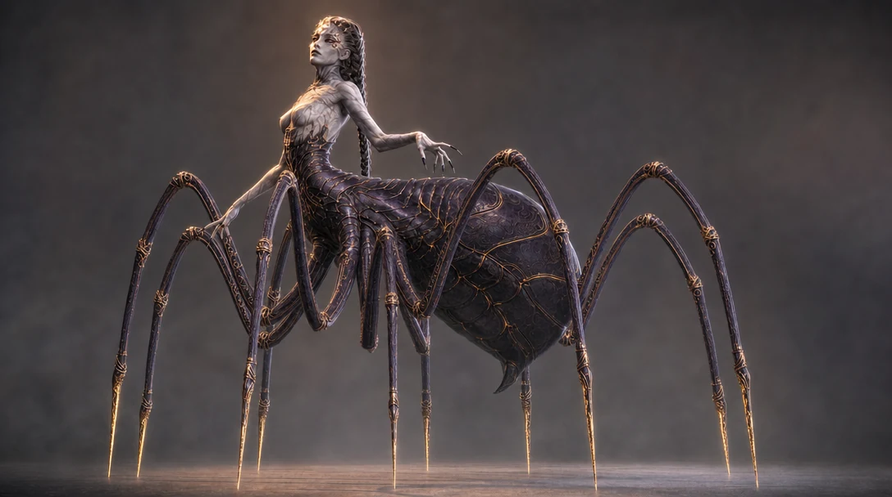
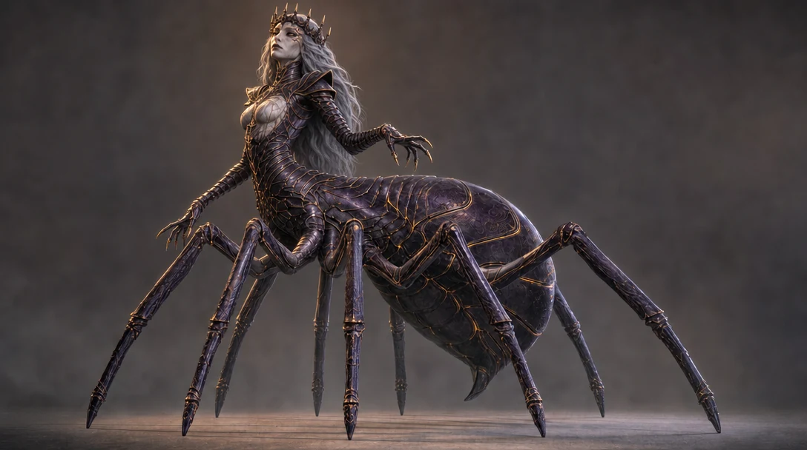
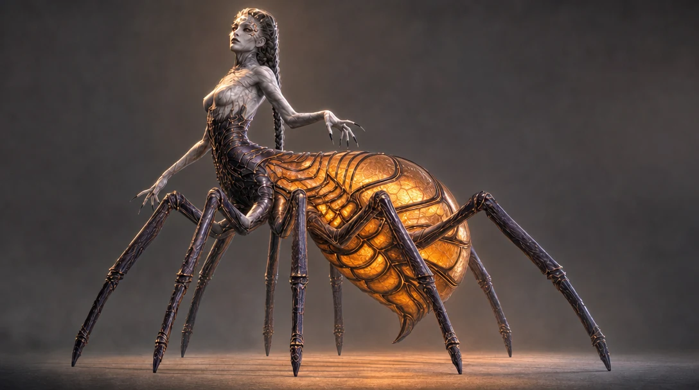
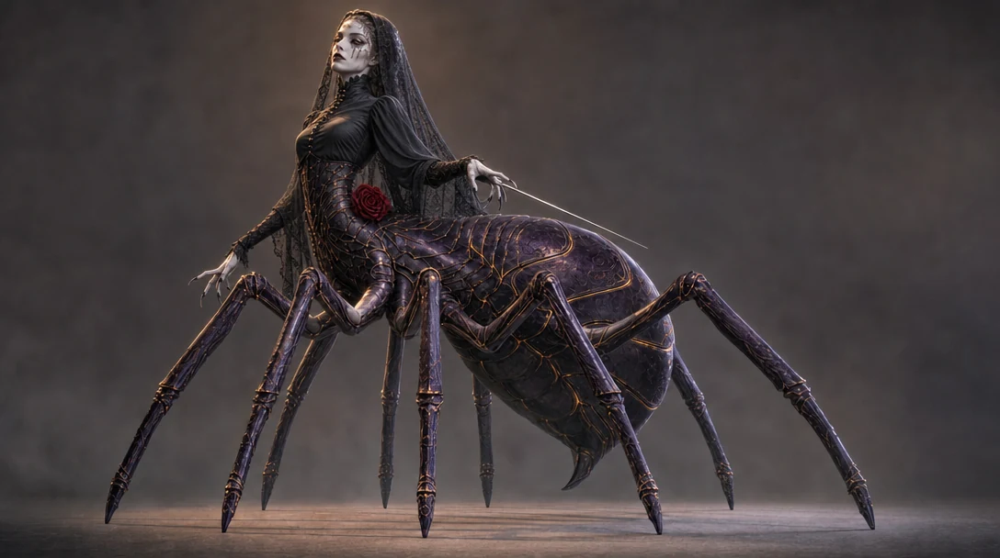
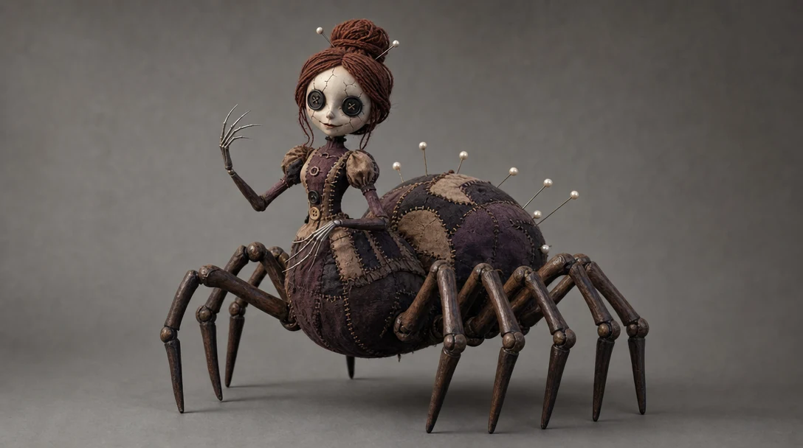
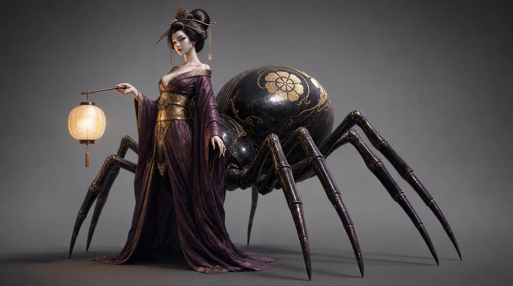
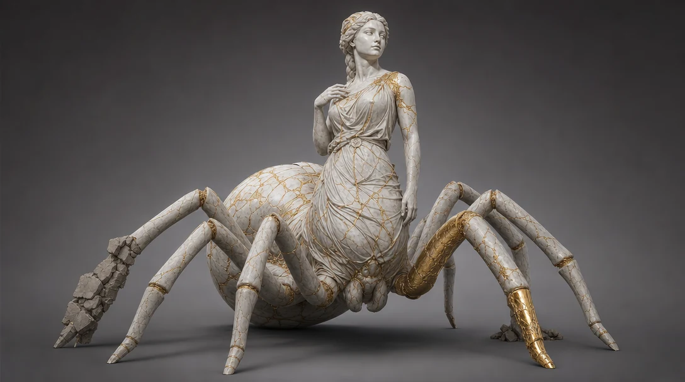
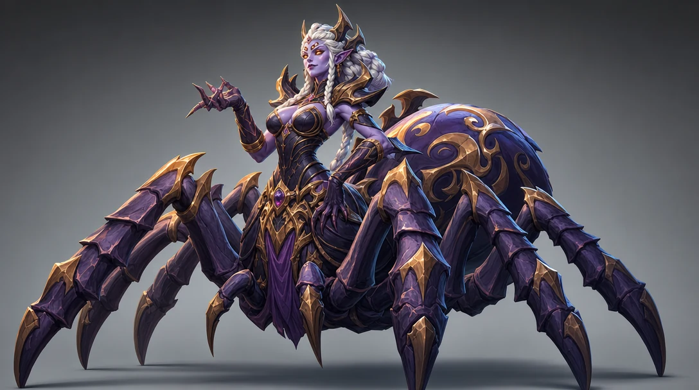
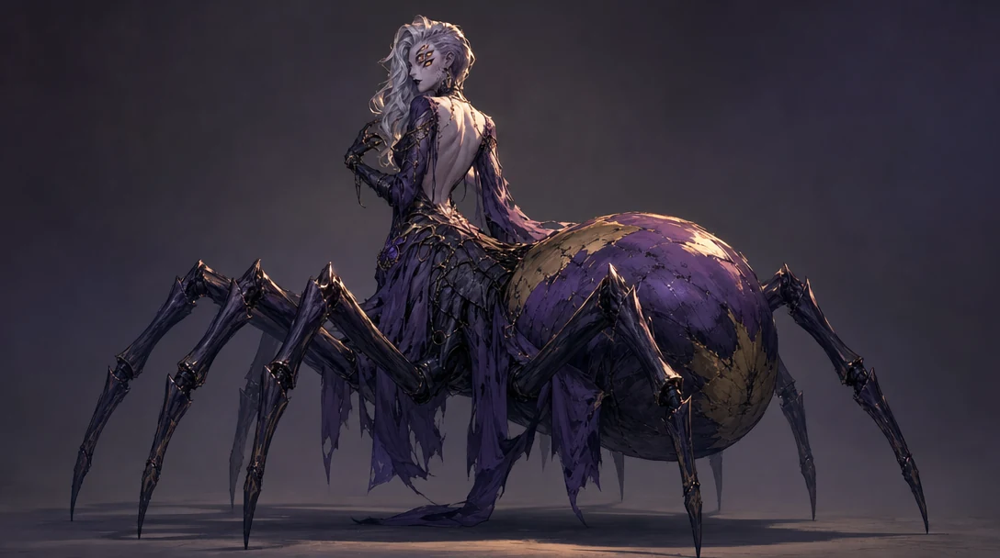

Arachne · Version 5 / Arachne exploration
Vary the legs, face and abdomen separately, then compare several complete style interpretations.
Working references
{kind=link}


Prompts
Saved generation prompt
Refine this creature concept, keeping the same character, face, pose, majestic abdomen size, materials and lighting. CHANGE ONLY THE LEGS: the eight spider legs become longer and more elegant, sweeping in high graceful arcs like a dancer on pointe, each leg tipped with a polished molten-gold stiletto blade that touches the ground on a needle point; fine gold filigree rings at every joint. Keep all eight planted, four per side, clear gaps. Nothing else changes. No web anywhere, no text, no watermark.
Longer dancer-arc legs, each tipped with a molten-gold stiletto blade on a needle point, gold filigree joints. Everything else untouched.

Prompts
Saved generation prompt
Refine this creature concept, keeping the same pose, the same majestic abdomen, the same eight legs, materials and lighting. CHANGE ONLY THE WOMAN: she becomes an armored weaver-queen — the chitin corset grows up over her shoulders into sculpted pauldrons and a high collar, a thin obsidian-and-gold crown of eight small spires on her brow, loose silver hair instead of the braid, colder commanding expression, and both hands gloved to the elbow in segmented chitin gauntlets with gold claw tips. Keep the pale marble skin on the face and chest. Nothing else changes. No web anywhere, no text, no watermark.
Chitin grows into pauldrons and a high collar, obsidian-gold crown of eight spires, loose silver hair, gauntleted arms. Colder, commanding.

Prompts
Saved generation prompt
Refine this creature concept, keeping the same character, face, pose, legs, materials and lighting. CHANGE ONLY THE ABDOMEN: the great spider abdomen becomes semi-translucent amber-glass chitin, glowing warmly from within like a paper lantern, with dark elegant rib-lines of the shell reading as a cage around the inner light, and a soft warm glow cast on the ground and the underside of the legs. Same majestic size, still raised off the ground. Nothing else changes. No web anywhere, no text, no watermark.
The abdomen becomes translucent amber glass glowing from within, shell ribs reading as a cage around the light. Same majestic size.

Prompts
Saved generation prompt
Refine this creature concept, keeping the same pose, the same majestic abdomen, the same eight legs, materials and lighting. CHANGE ONLY THE WOMAN: she becomes a mourning widow — a long sheer black lace mourning veil over her hair falling to the shoulders, a high-collared black silk bodice with jet buttons flowing into the chitin corset, black tear-streak makeup under pale eyes, and a long silver sewing needle held in one hand like a rapier. Keep the pale marble skin. A single deep-red rose tucked at the waist as the only color accent. Nothing else changes. No web anywhere, no text, no watermark.
Black lace mourning veil, jet-button silk bodice, tear-streak makeup, a silver sewing needle held like a rapier, one red rose.

Prompts
Saved generation prompt
A spider-centaur witch in the style of a handcrafted stop-motion puppet animation film, dark whimsical fairy-tale horror for all ages. She is a doll-like seamstress: a porcelain doll face with fine hairline cracks and two large black BUTTON EYES sewn on with visible thread, a sweet unsettling smile, yarn hair in a neat bun with two pins. Her upper body is a patchwork fabric dress with visible stitches and mismatched buttons; at the waist she transitions into a plump quilted-fabric spider body — a big soft rounded abdomen like a stuffed pincushion with pearl-head pins stuck in it, and EIGHT slender articulated legs of dark polished wood with visible ball joints, four per side, all touching the ground. Long needle-thin silver fingers. The whole figure looks hand-built for a miniature film set: felt, thread, wood grain, tiny imperfections. Soft theatrical key light, plain mid-gray studio backdrop, full body visible, three-quarter view, no spiderweb, no text, no watermark. 16:9.
The Coraline-adjacent direction: porcelain doll face with sewn-on button eyes, patchwork dress, pincushion abdomen with pearl pins, wooden ball-joint legs, needle fingers.

Prompts
Saved generation prompt
An elegant spider-centaur in Japanese folklore style, stylized realism like an Unreal Engine 5 cinematic — not photoreal, not cartoon. A jorogumo: a beautiful pale woman with an elaborate black-and-silver hairstyle held by golden kanzashi pins, wearing a luxurious silk kimono in deep plum with a gold obi, the long kimono skirts parting at the waist where her body flows into a great lacquered spider body — the abdomen finished like black urushi lacquer with a large golden family crest painted on it, majestic and raised off the ground, and EIGHT glossy lacquered legs, four per side, all planted with clear gaps. She holds a small paper lantern on a short rod, its warm glow lighting her face from below. One continuous anatomy, kimono silk blending into chitin. Palette: 60% black lacquer, 30% plum silk and pale skin, 10% gold. Plain mid-gray gradient backdrop, full body, three-quarter view, no spiderweb, no text, no watermark. 16:9.
Japanese folklore take: plum silk kimono and gold obi flowing into a black urushi-lacquer spider body with a golden crest, paper lantern in hand.

Prompts
Saved generation prompt
A spider-centaur as a living museum statue come to life, stylized realism like an Unreal Engine 5 cinematic — not photoreal, not cartoon. The whole creature — woman and spider body both — is carved from white Parian marble: a serene Greek goddess torso in a carved marble chiton, hair in a sculpted marble braid, blank elegant statue eyes, flowing at the waist into a massive marble spider body with a grand rounded abdomen and EIGHT marble legs, four per side, all planted. The statue has cracked and been repaired with gold in kintsugi style: veins of bright gold fill every crack, densest on the abdomen and one shoulder, one marble leg visibly rebuilt almost entirely from gold. Fragments of a broken stone pedestal still cling to two rear legs. Warm gallery key light with cool fill, plain mid-gray gradient backdrop, full body, three-quarter view, no spiderweb, no text, no watermark. 16:9.
The whole creature as an awakened museum statue: white marble repaired with gold veins, one leg rebuilt in solid gold, pedestal fragments on the rear legs.

Prompts
Saved generation prompt
A spider-centaur boss character in bold hand-painted stylized fantasy game art, the look of a AAA stylized MMO cinematic — chunky exaggerated shapes, painterly textures, rich saturated color, not photoreal. A regal weaver-queen: pale violet-skinned woman with white braided hair and four glowing amber eyes, confident smirk, her torso in sculpted dark chitin armor with big readable shapes, flowing into a huge stylized spider body with an exaggerated majestic abdomen painted with swirling gold ornament, and EIGHT thick powerful legs with bold silhouettes, four per side, all planted wide. Strong rim light, saturated violet-and-gold palette with deep teal shadows. Plain mid-gray gradient backdrop, full body, three-quarter view, no spiderweb, no text, no watermark. 16:9.
Bold chunky MMO-boss look: violet skin, four amber eyes, exaggerated abdomen with painted gold ornament, thick powerful legs, saturated palette.

Prompts
Saved generation prompt
A spider-centaur antagonist in painterly stylized dark anime style — visible brush-textured shading, sharp graphic linework in the face, moody cinematic color, like a prestige animated series for adults, not photoreal, not classic cel anime. An elegant cursed weaver: a striking pale woman with asymmetric silver hair, four amber eyes on one side of her face, dark lips, an open-back violet gown whose torn hem transitions into segmented chitin at the waist, flowing into a grand dark spider body with a majestic abdomen catching a violet-to-gold gradient of light, and EIGHT sleek legs, four per side, all planted with clear gaps. Brush-stroke highlights on the chitin, dramatic single warm key light against cool violet ambience. Plain dark-gray gradient backdrop, full body, three-quarter view, no spiderweb, no text, no watermark. 16:9.
Prestige-animation antagonist: brush-textured shading, asymmetric silver hair, four eyes on one side, torn gown into chitin, violet-to-gold light.